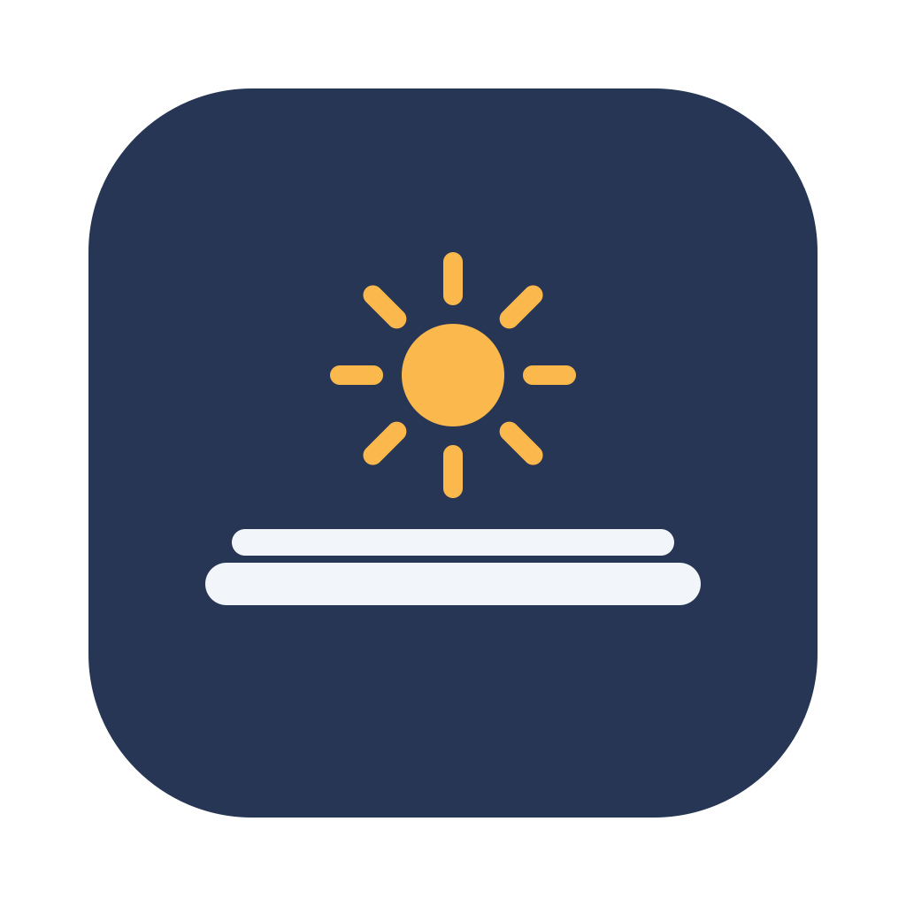

Shutlid
Keep your MacBook awake with the lid closed.
Lid closed, in a bag, on battery, no external display: your processes, SSH sessions, dev servers and AI coding agents keep running as if the lid were open. One switch in the menu bar for you, three commands for your agents. Free, open source, Swift, zero dependencies.
No release yet: the first build is published after the closed-lid test on the
M4 (see the status below). Until then, build from source with
scripts/build.sh.
Three commands
shutlid on # keep the Mac awake, lid closed or not
shutlid off # back to normal sleep
shutlid status # what was requested, and what macOS is really doingstatus always reports reality, read fresh from the kernel:
Requested: ON
Effective: ON
Mode: always
Auto-off: in 23h 12mBuilt for AI agents
No GUI automation and no password prompts after a one-time setup. Exit
codes are stable: status exits 0 while keeping awake and 1
otherwise.
User: Keep my Mac awake, I'm closing the lid.
Agent: shutlid on
...
User: You can let it sleep now.
Agent: shutlid offHow it works
caffeinate and sleep assertions cannot stop a MacBook from
sleeping when the lid closes. Shutlid uses the one thing that can, the
system-wide pmset disablesleep flag, which the kernel treats as
a veto on every kind of sleep. Because that flag needs root, setup installs a
sudo rule scoped to exactly two commands (turn the flag on, turn it off), a
boot-time reset so a restart always returns to normal sleep, and a command
line link. No daemon, no helper, no custom code ever runs as root.
Read the full investigation, including what was tried and rejected, in RESEARCH.md.
Safety first
- Auto-off. Keep-awake turns itself off after 24 hours by default (1h, 4h, 8h, 24h or never). A forgotten laptop does not stay awake forever.
- Normal sleep after every restart. Unless you opt in to restoring the previous state.
- Honest status. If macOS is not preventing sleep, Shutlid says so, whatever was requested.
- Heat and battery. A closed MacBook in a bag cannot shed heat, and while keep-awake is on the low-battery sleep is off too. Use it for the light jobs it is meant for.
Install
- Download the DMG from Releases, or build it with
scripts/build.sh. - Drag
Shutlid.appto/Applications. - Open it and choose Turn On. macOS asks for your administrator password once, and never again.
Requires macOS 14 or later on Apple Silicon. Uninstall with
scripts/uninstall.sh, which restores every setting it touched.